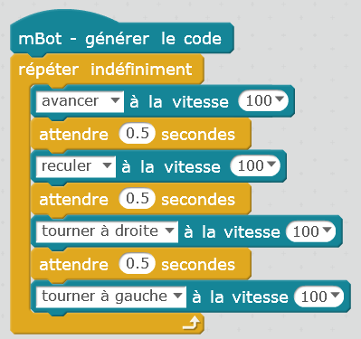

Défis janvier 2020
Programme pour tester le moteur
Ecrire le programme suivant et le téléverser dans le robot

Défi 1: s'arrêter devant un obstacle
Utiliser le capteur de distance (capteur ultrason) pour détecter quand un obstacle est à moins de 10 cm du robot.
Le robot doit s'arrêter quand il détecte l'obstacle